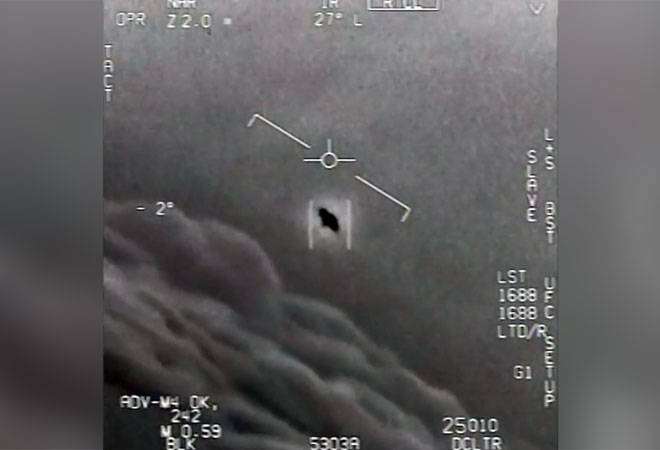

Nas imagens, os pilotos norte-americanos parecem surpresos com a velocidade hipersônica dos objetos, que voam sem asas ou motores.

Os reptilianos aparecem em todos os aspectos como seres humanos normais, graças à sua tecnologia e seus poderes mentais.